We've been using the RGB system for all of our assignments. This means that whenever we are choosing a color, we choose the amount of red, green, and blue that our color should have.
Another common representation is HSB, where the three parts of a color break down into Hue, Saturation, Brightness.
Open up Google's Color Picker
https://www.google.com/search?q=color+picker
Previously you may have used this to figure out the R, G, B values of a color. But the way that you choose is the more natural choice of adjusting the Hue, Saturation, and Brightness.
When picking a color here, you are not thinking in have to do a few things. The main one is to first pick a Hue using the Slider
The Hue is a representation of the color all at once. This is where you choose if your color should be red, yellow, or purple. The 'amount' of the color is not chosen yet.
Once you've selected the Hue, you can control the Saturation and Brightness in the upper area by dragging the selection circle around.
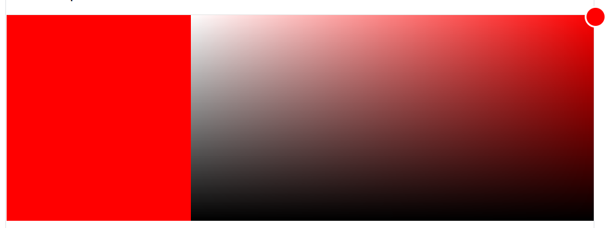
Dragging the circle to the left and right affects the Saturation of the color, move all the way to the left and you'll see that the color gets washed out until it is just white.
Dragging the circle up and down affects the Brightness of the color. Your color is brightest at the top, and black at the very bottom.
Once you've chosen your color, you are given several different numerical representations of it.

We usually focus on the RGB value, but this time we are focusing on the HSV values (essentially the same as the HSB we will use). The above example is a simple red color and you can see has a hue of 0, and a 100% for the saturation and brightness.
If you drag the hue slider and drag it, you should see that the Hue is not represented in the '256' style that we usually associate with RGB. Hue is represented as an angle on a wheel, where 0 degrees and 360 degrees are both red.
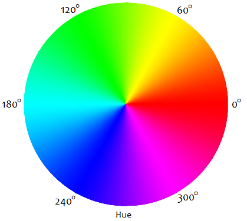
Open the RGB vs HSB workspace in CodeHS
There you will find a simple program that has a variable counting up from 0, then being used as one of the values that choose the background color.
Run the sketch and watch as the color goes from the CYAN (0,255,255) to the WHITE (255,255,255) since the sketch is in RGB, after the number passes 255 you will not see any change because the red value is maxed out.
After watching it through, uncomment the line in the setup() function
colorMode(HSB);
This function call will tell p5 that we are no longer giving RGB values whenever we choose a color, instead we are giving HSB. With this change, the increasing variable is now used to represent the hue of the color. The other two values, saturation and brightness, are maxed out at 255 so that our colors aren't washed out or dark.
Run the sketch again and watch this time as the sketch cycles through all of the colors of the rainbow.
Again, if you wait long enough the color will eventually stop changing. This time any hue above 360 is accepted as 360 and the sketch freezes at red.
Your task is to modify the code to make it cycle forever. Add an if statement that sets the a variable back to zero if it makes it above 360. If done properly, this should cause the colors to infinitely cycle through the rainbow, never maxing out.
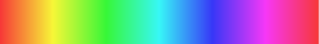
As you just saw, using colorMode(HSB); makes it so that we can cycle through the rainbow with a single variable.
To produce the Hue Strip above was produced by drawing 360 vertical lines, each with a different hue angle in their color.
Open the Hue Strip workspace, which starts on a strategy that draws three vertical lines, with hue angles 0, 1, and 2.
function setup() {
createCanvas(360, 40);
colorMode(HSB);
}
function draw() {
background(220);
//Replace this with a for loop
stroke( 0, 255, 255 );
line( 0, 0, 0, 40);
stroke( 1, 255, 255 );
line( 1, 0, 1, 40);
stroke( 2, 255, 255 );
line( 2, 0, 2, 40);
}
The strategy that has been started here is going to get old very quickly. To make the whole strip we need all 360 lines. Take a look at how each line drawn has an x value that matches its hue value, then rewrite the strategy with a for loop helping to represent every number from 0 to 360, each time choosing a stroke with that hue value and drawing a line at that x value.
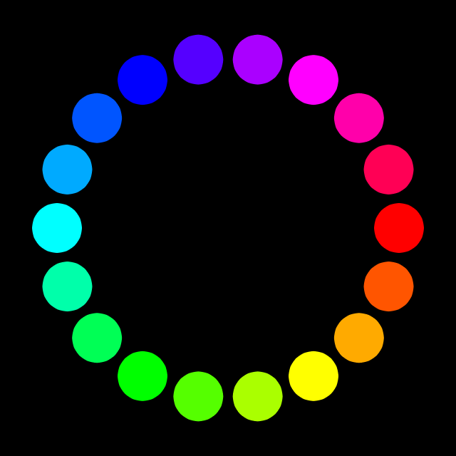
The sketch above draws colorful circles arranged into a bigger circle. Each circle's color has a hue angle related to its location in the bigger circle.
We will be using HSB colors and trigonometry, so don't forget:
colorMode(HSB);
angleMode(DEGREES);
Remember that we can figure out a location on a circle at a certain angle using a little trigonometry:
let x = centerX + radius*cos(angle);
let y = centerY + radius*sin(angle);
Choose values to represent the centerX, centerY, and radius of your bigger circle. Then create a for loop to iterate through every angle, 20 degrees at a time and draw a circle using the location derived by the above calculations. The fill for each circle should have a hue angle that matches the angle used to derive its location.
If you draw your circles using noStroke() and space them 1 degree apart instead of 20, you get a nice hue ring
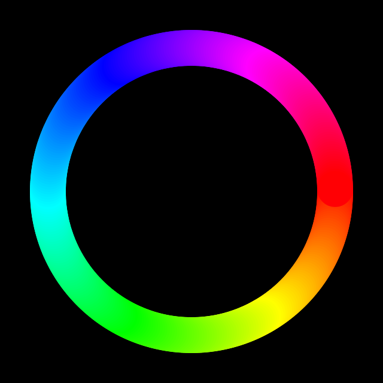
Re-open the Hue Strip assignment. The previous version of it had a width of 360 for convenience. This made it easy for every x value to find a hue, which also had a range of 360.
Modify the canvas to have a width of 700. This will cause a problem that is not simply solved by changing the loop. Any x value above 360 is not valid, and p5 will cap it to red (the 360 value).
What we need is to stretch the hue's 0 - 360 range across the 0 - 700 range of the window.
The map() function is perfect for that. Remember that it takes a value that exists in one number range and returns its corresponding location in the new range:
map( value, originalMin, originalMax, newMin, newMax)
If your loop is representing every x value from 0 to 700, you can find its hue
let h = map( x, 0, 700, 0, 360); //maps an x value to its corresponding hue.
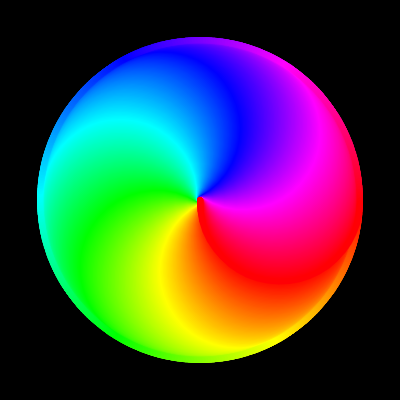
Another variation of the Hue Circle is to create a colorful 'beach ball'. This time the colors are arranged into a swirling effect that can be achieved by many differently colored arcs.
First, copy this starter code into an empty sketch:
function setup() {
createCanvas(200, 200);
angleMode(DEGREES);
colorMode(HSB);
strokeWeight(2);
noFill();
}
function draw() {
background(255);
translate(width/2, height/2);
arc(40,0,80,80, 0, 180)
}
Here you've been given some code that first translates to the center of the canvas, and then it draws an arc 40 pixels to the right of center. The purpose is so we can use the rotate() function to help us spin around the center.
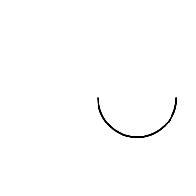
To get the beach ball use a loop that will draw 360 of the same arc, rotating 1 degree between each one. To create the rainbow effect, each arc should b drawn with a different stroke
When we first used the noise() function, we created a drifting ball by calling the noise function twice. Open the Colorful Squiggle workspace
function setup() {
createCanvas(400, 400);
noStroke();
colorMode(HSB);
}
function draw() {
background(0);
let x = noise( frameCount*0.005 , 5)*width;
let y = noise( frameCount*0.005 , 10)*height;
fill(255);
circle(x,y,15);
}
We are going to use a similar strategy to create a colorful squiggle, that with wiggle around.
First, we need to get the sketch to draw a line instead of a single ball. Again instead of using frameCount*0.01 and drawing a single circle, create a for loop that will draw the first 1000 circles. Your looping variable should count from 0 to 1000, and you should replace frameCount with the looping variable. This will help you generate a thousand locations every frame instead of just one.
The result should be random, but generate a small blob
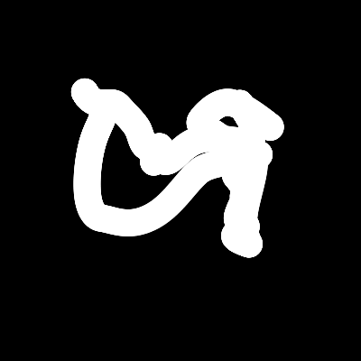
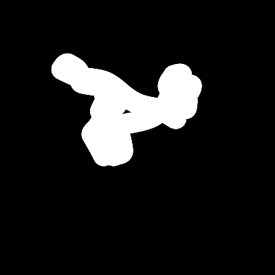
You can see a little bit more depth if the circles all have different hue values. Again, use map() to help you give each of your 1000 circles a different hue.
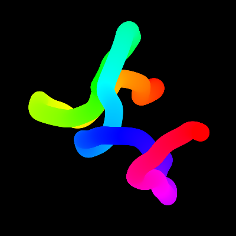
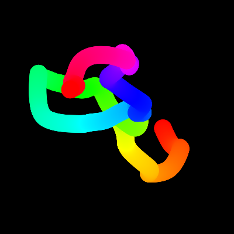
We started with a sketch that was a little bit alive, due to the use of frameCount*0.005 as one of the values fed to the noise function. This caused every frame to generate a slightly different number. The current version of that program has you replacing that frameCount with a looping variable:
let x = noise( f*0.005 , 5) * width; //f is my looping variable
let y = noise( f*0.005 , 10) * height;
These functions are using the same value as noise's first parameter, f*0.005. This would give us exactly the same value, except we are using the fact that noise() is a two dimensional function and adding two random values, 5 and 10. This means that even though the first values are the same, we are at different locations in the 'noise space', causing the values to differ.
To bring back a little bit of change per frame, we are going to insert the frameCount back into our noise function, but this time as the third parameter.
let x = noise( f*0.005 , 5, frameCount*0.001) * width; //f is my looping variable
let y = noise( f*0.005 , 10, frameCount*0.001) * height;
This means that we can still cycle the first values while holding the second two steadily apart from each other. Since the third value is now slightly different each time, that mean that the resulting values will all be slightly different each time.
Now you should have a nice, undulating rainbow squiggle.